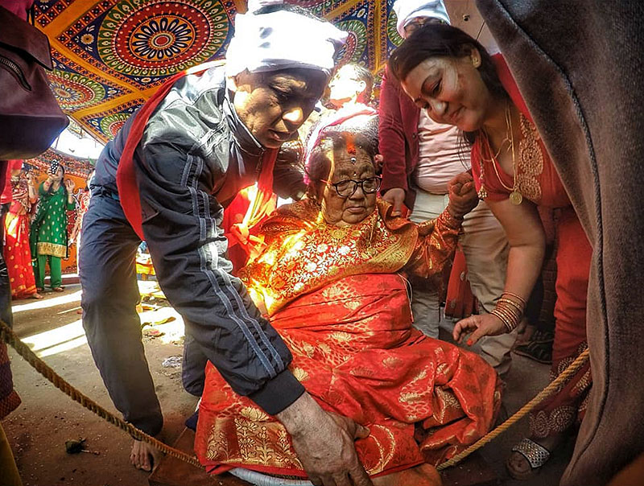
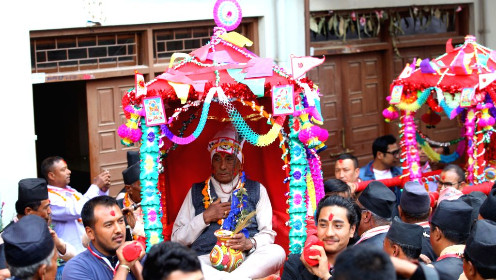

JANKU
Janku is celebrate only in newari community in Nepal. The first Janku is when a person is of 77 years, 7 months and 7 days where they are worshipped as an aspect of the sun. There are five Jankus performed during the lifetime of the person if s/he happens to live up to 106 years old. First Janku is performed at the age of 77 years, 7months, 7days, second at the age of 83 years, 4months, 4days, next is done at the age of 88 years, 8months, 8days, fourth Janku is performed at the age of 99 years, 9 months, 9days and the last one at the age of 105 years, 8months, 8days (after one has seen 1000 full moon in their lifetime). The person is regarded as God after these rituals are performed.


According to the Newar gurju (high priest) Deepak Bajracharya, “a Janku is celebrated at such defined ages for two reasons.” Newari texts mention that the Janku particular ages for the ceremonies mark inauspicious times in a person’s life, times when even the smallest hurdle might pose a serious threat to one’s life. The various rituals are performed in order to please particular deities to help the person overcome those problems. Before the invention and availability of modern medicine in the country, the average life expectancy of the people was 60 to 65 years and reaching the age of 77 and beyond was similar to getting a new life. It is the second reason for a Janku. Also, the title of Thakali is given to the senior member of the community after their Janku and they are considered as god or goddess.The person is treated like a bride or a bridegroom and is carried on a colorful chariot around the area in a large procession followed by the family members. It is a very important celebration in the life of Newari people.